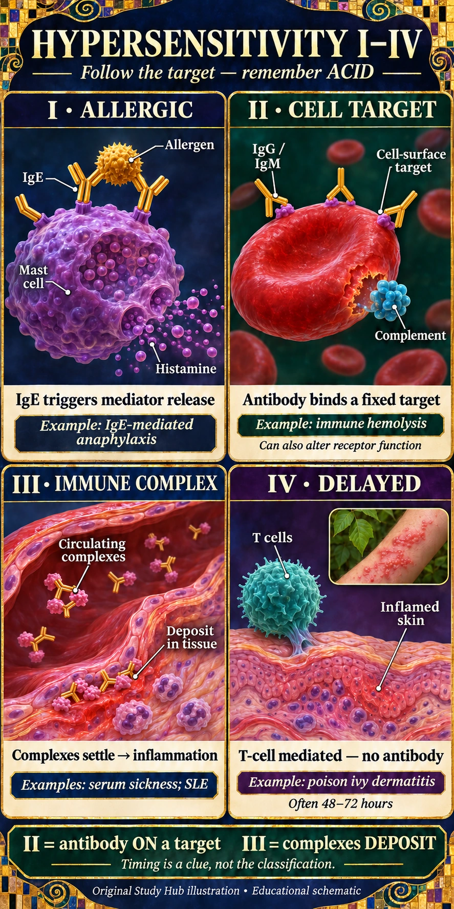
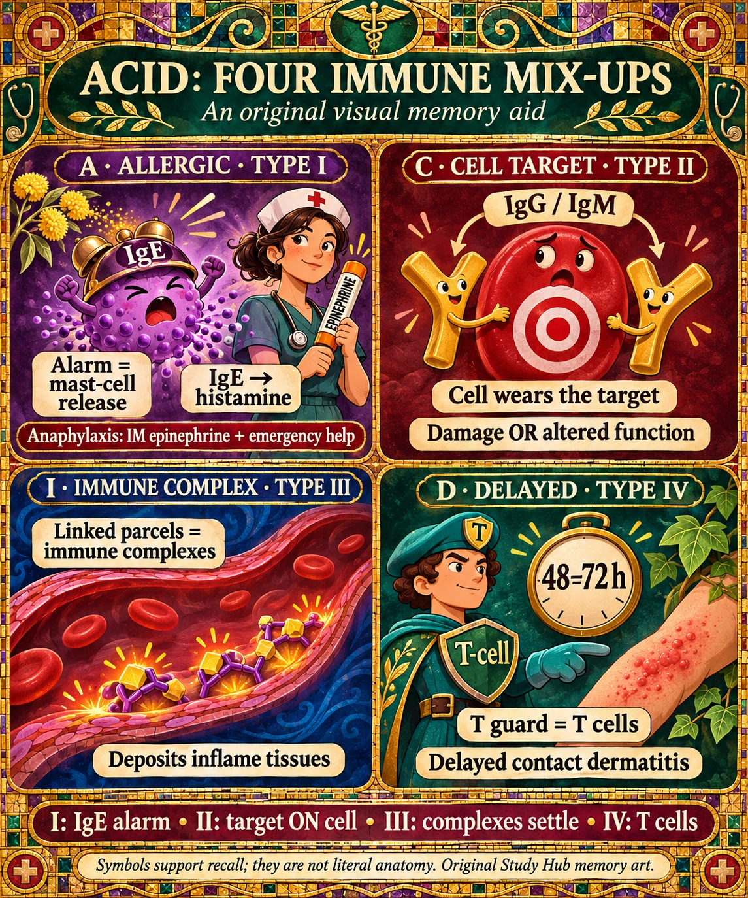

ABSN STUDY HUB · VISUAL STUDY CARD
Hypersensitivity I-IV: remember ACID
See what each reaction targets
Start with the picture, then use the short labels below. Type II binds a fixed target; Type III deposits circulating complexes.

Read the four pictures
- I — mast-cell alarm: the allergen links IgE; the mast cell releases mediators.
- II — target on the cell: antibody binds a cell or tissue target. Damage or altered receptor function can follow.
- III — complexes settle: antigen–antibody clusters deposit in tissue and trigger inflammation.
- IV — T cells arrive: a cell-mediated response; classic contact reactions develop over 48–72 hours.
ACID: four immune mix-ups
An original illustrated memory aid, not an official Picmonic product. The characters are symbols for the clinical facts.

ACID: Allergic, Cytotoxic, Immune complex, Delayed. “Cytotoxic” is shorthand: Type II can change receptor function without killing the cell. “Allergic” in the mnemonic does not mean every allergy is Type I.
Simple Nursing handout: no matching four-type hypersensitivity handout was found in the current library. These two pictures are original Study Hub illustrations.
Original course labels and notes are retained below. Open a type to review its mechanism, timing, and examples.
Course overview
NUR 258 / MODULE 3 / VISUAL STUDY GUIDE
- Hypersensitivity I–IV: remember ACID
- Identify the mechanism first. Timing is a clue, not a diagnosis.
💡 I = IgE • II = cell or tissue target • III = deposited complexes • IV = T cells
TYPE I
A = TYPE I: ALLERGIC
- Mechanism: IgE activates mast cells; mediators such as histamine are released.
- In the drawing: allergen → IgE on mast cell → mediators
- Timing: Usually rapid after re-exposure; often minutes.
- Examples: IgE-mediated anaphylaxis; allergic rhinitis.
TYPE II
C = TYPE II: CYTOTOXIC
- Mechanism: IgG or IgM targets antigens on cells or tissues.
- In the drawing: antibody on cell → cell destroyed, or function altered
- Timing: Variable; do not classify by time alone.
- Examples: Immune hemolytic transfusion reaction; autoimmune hemolytic anemia.
TYPE III
I = TYPE III: IMMUNE COMPLEX
- Mechanism: Antigen–antibody complexes deposit in tissues and trigger inflammation.
- In the drawing: immune complexes → deposit in a vessel
- Timing: Variable; hours to days or longer.
- Examples: Serum sickness; immune-complex features of SLE.
TYPE IV
D = TYPE IV: DELAYED
- Mechanism: T cells drive the reaction; antibodies are not the mediators.
- In the drawing: T cell → raised, inflamed skin
- Timing: Often 48–72 hours in classic delayed reactions.
- Examples: Poison ivy or nickel contact dermatitis; tuberculin skin-test reaction.
Sources
- Sources: Merck Manual Professional, Gell and Coombs classification · CDC tuberculin skin test guidance · CDC dental infection-control guidelines, for the two kinds of latex reaction.
- Study aid • Reviewed September 23, 2026 • Source links and text version accompany this graphic.